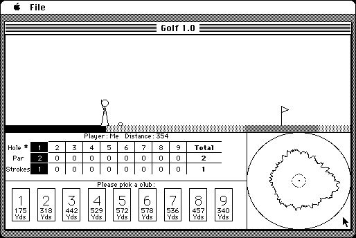

Download
Golf.zip (86K) Golf 1.0 repackaged into a zipped hfs disk image and checksum file. The disk image can be mounted with Mini vMac.
Golf.bin (86K) Golf 1.0 in the original format.
copyright: David Hjelle, "Supervised by Stephen Doering."
mod date: Jun 19, 1997
license: freeware
official url :
The Hjelle Jar ~ Software
"A simple golf game."

If you find these downloads useful, please consider helping the Gryphel Project, which hosts them.
Here are the md5 checksums for the downloads, signed with Gryphel Key 5:
--------- GRY SIGNED TEXT --------- d151f8f9aa5fa959a520e2101e4f9b67 Golf.zip edd6f261b9e39f219d7cd4417d7f46fa Golf.bin ------- BEGIN GRY SIGNATURE ------- Gry/4Xa8CFcUzxdN/IP70O4H27Kvl43WR+XQGiEp1ufo6ckK+2l9j7BN90JL2hem FRlenC5mGj9jsAYWLYy6ejAf9YXxdTr0sb5QmLolaTpoQz4RDxIlFHfU3uW+bg5E ykp9EIAWCAj1c3wLb9KwMuEg+lkJhnbZJ2aDq6TYgVM77pdx9whwzFvYPM/WVntX -------- END GRY SIGNATURE --------